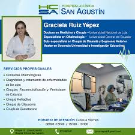
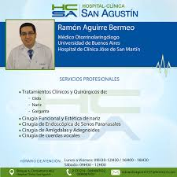
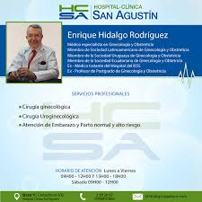
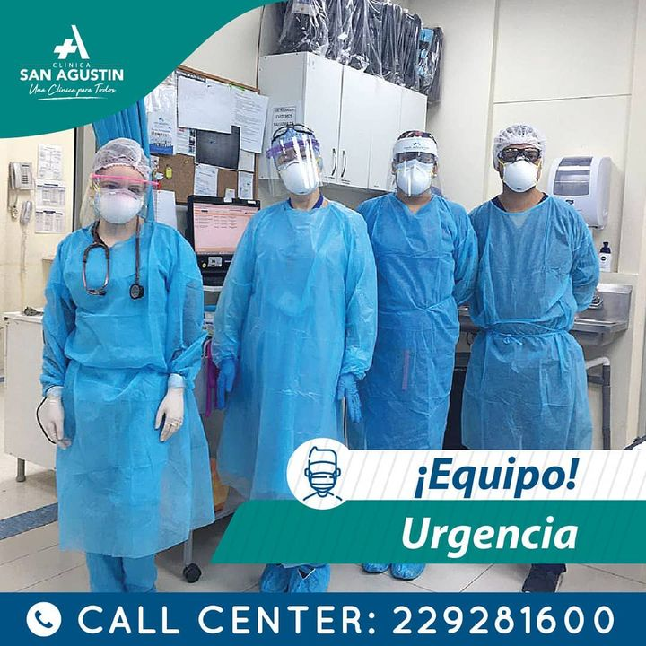

Tenemos a los mejores especialistas, que estan trabajando con nosotros
Dra Graciela

Dr. Ramon

Dr. Enrique

Tenemos este hermoso equipo de cirugias, dispuesto a salavar vidas

Médicos, enfermeras, auxiliares de enfermería y otros trabajadores de la salud se han convertido en héroes involuntarios en la lucha contra el coronavirus, conquistando elogios y sentidos aplausos desde los balcones y las calles de todo el mundo.
La pandemia se ha cobrado la vida de 118.000 personas, --entre ellas numerosos médicos y enfermeras-- y contagiado a 1,9 millones.
La vida diaria de ese ejército de profesionales sanitarios, con una vocación a toda prueba para tratar de salvar vidas, es muy difícil. La alta afluencia de pacientes, la falta de equipos, el miedo al contagio y la necesidad de dar apoyo a los pacientes más graves son los dificultades y tareas que deben superar y cumplir cada día, por eso quedate en casa que muy pronto saldremos de esta.